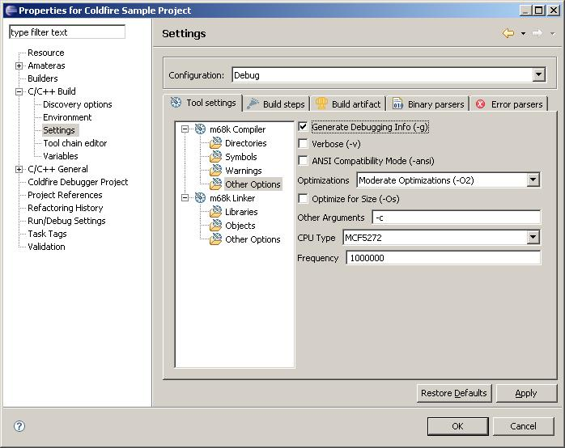

The debugger lets you see what's going on "inside" a program while it executes.
In order to debug your application, you must use executables compiled for debugging.
These executables contain additional debug information that lets the debugger make
direct associations between the source code and the binaries generated from that original source. To add
debug information to your executables using Coldfire Debugger, in the Coldfire GNU toolchain settings select
the check box indicating adding -g parameter to the compiler.
Step 1: Right click on the working project name and Select Properties....
Step 2: Select C/C++ Build > Settings.
Step 3: Select m68k compiler > Other options under Tool settings Tab.

Step 4: Mark Generate Debugging Info (-g).
Step 4: Click OK.
The Coldfire debugger uses GDB as the underlying debug engine. It translates each user
interface action into a sequence of GDB commands and processes the output from GDB to
display the current state of the program being debugged.
Tip: Editing the source after compiling causes the line numbering to be out of step
because the debug information is tied directly to the source. Similarly, debugging optimized
binaries can also cause unexpected jumps in the execution trace.